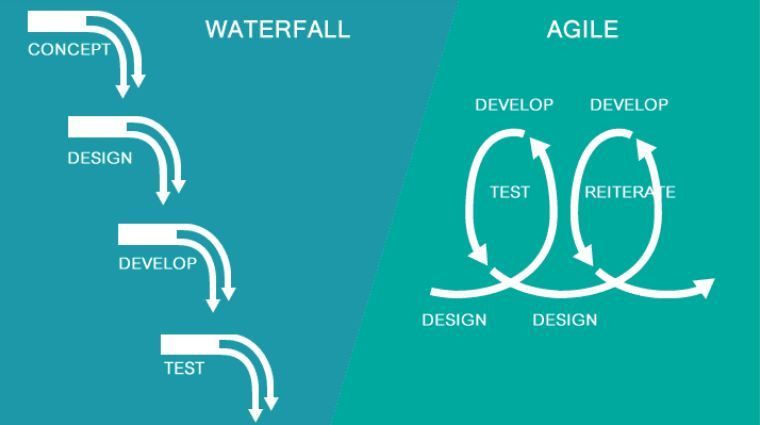
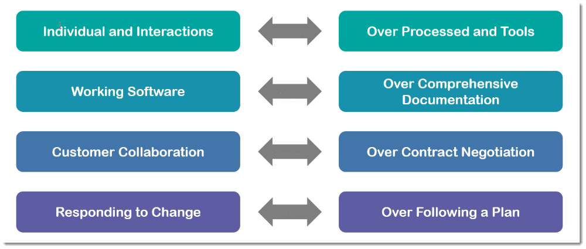

Agile
Agile is a philosophy that helps organizations work faster, produce better products, experiment with ideas, empower employees and save money. It was developed in the 1990s by a group of software developers who wanted to do things better. It derived from the need to produce software faster in a changing environment. It was made to break up code into smaller parts that could be produced, removed, and changed without affecting the entire program. It utilizes an iterative cycle of constant improvements and reevaluation of the process. It replaced the waterfall method where the CEO is at the top and tells everyone what to do, and the orders trickle down to the development team a little too late to be helpful.
In 2000 the Agile Manifesto was written to further concrete the mindset needed to implement agile correctly. Agile values individuals and actions over long-drawn-out processes or specific tools. This means the team should be given the correct tools for the job, and they might need to change tools more often than in the past. It also places more emphasis on a working product instead of documentation and reports. The functional product is better for team morale and gives the customer what they value, helping them solve their problems. Speaking of the customer, agile values input from the customer overwriting a contract which puts into stone what is expected of both sides. This is too hard to maintain even over a short period in our rapidly changing world. Last but certainly not least principle of agile is acting to change instead of being stuck to an outdated plan that no one wants anymore. If you place similar weights on these values, you can start to be more agile in your processes even if you are not a software developer.
Manifesto for Agile Software Development
We are uncovering better ways of developing software by doing it and helping others do it. Through this work we have come to value:
That is, while there is value in the items on the right, we value the items on the left more.
Scrum
Scrum is a framework or subset of agile. Created in Utah, it is the most popular by far. Scrum teams are made of 3 types. A product owner is usually in higher management and comes up with an idea for the team. They break the idea up into smaller sub-tasks and give each one a priority. This is called the product backlog. This is given to the Scrum Master. The scrum team takes these smaller tasks and divide them into smaller sub-tasks called the sprint backlog and volunteer to work on some of them during the sprint. A sprint is a time frame usually 2-4 weeks long. At the end of the sprint, the team tests the outcome of what they worked on. They also review how their work process went and decided whether to stick with it or go a different route next week. This is called self-accountability, and it helps the team to work comfortably and with fewer conflicts. The team also checks the outcome with an actual customer to see if it meets the demands. If not, they fix it during the next sprint. This repeats until the product backlog is empty.

The Bottom Line
Agile has many frameworks to choose from to fit your needs. You don’t have to be in software development to utilize it either. It is a value system that can be used in any environment where problem-solving is the main objective. Before you start practicing scrum or implementing it at your place of work, you should seek professional training for everyone who will be involved that includes decision-makers at the top—leaders in agile serve in a servant role to give teams what they need to succeed. Agile will not function properly if everyone is not on board and doesn’t have a full understanding of what it is when to use it. Start small, allow teams to make it their own once they master the basics. Good luck!